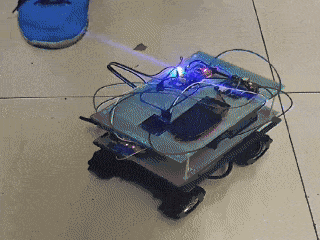

EDUCATION
University of Electronic Science and Technology of China (UESTC) (Sept 2022 — Present)
University of Glasgow, Dual Degree Program (Sept 2022 — present)
- Major: Electronic and Computer Engineering; GPA: 3.87/4.0, Ranking: 7/165 (Top 4%)
- Relevant Coursework: Signals and Systems, Stochastic Processes, Artificial Intelligence and Machine Learning, Information Theory, Electrodynamics, Digital Circuit Design, etc.
- Online Course: Abstract Algebra, Complex Analysis, Differential Geometry, Control Theory, etc.
RESEARCH
System-level Co-Design of RISCV Accelerators for TinyML at the Edge (On going)
- Designing and implementing hardware-accelerated TinyML kernels that are adaptable and efficient for edge computing scenarios using
Chisel,Verilog,PythonandC++. - Exploring a large multi-dimensional design space using automated methods (such as heuristic or evolutionary algorithms) to identify optimal configurations balancing accuracy, energy, and latency.
- Conducted under the supervision of Prof. Yun Li.
Movable Antenna (MA) for Anti-jamming (Feb 2025 — Jun 2025)
- Conducted a heuristic investigation into Anti-jamming through stochastic antenna movement under the supervision of Prof. Weidong Mei.
PROJECTS
Control and Computer Vision for Autonomous Quadcopter System (Feb 2025 — Jun 2025)
- Developed a automatic quadrotor aircraft for objection detection, route planning, and closed-loop flight control.
- Used
ROS2andOpenCVlibrary to implement originally designed computer vision algorithms for real-time landing area detection.
Visual RV32I CPU Core (Jan 2025 — Mar 2025)

Digital- Designed and simulated an entire RISCV 32-bit CPU from scratch in
DigitalSoftware for working principle visualization. - Supported basic peripherals: GPIOs, IIC, UART, etc.
- Simple boot ROM in assembly, minimal interrupt service for running a Linux kernel.
Adaptive Markov Entropy Source Encoding (Oct 2024 — Nov 2024)
- Originally-designed the second-order Markov Adapative Approximation (AME) to perform source coding of the Game of Thrones using
PythonandMatlab. - Evaluated and compared the performance of AME, Huffman and Fano coding.
CNN for Mbed (Feb 2024 — May 2024)

- Integrated a convolutional neural network (CNN) into an MCU using
CinMbedOS. - Smart fall detection, body temperature monitoring and real-time data visualization for patients.
Human Voice Recognition Smart Car (Sept 2023 — Dec 2023)

- Designed and implemented a small car capable of recognizing human voice commands and performing corresponding actions including moving forwards/backwards, turning/sliding left/right using standard library in
Con STM32F103. - Led a 4-member team in the project.
Digital Door Lock for Dormitory (Sept 2023 — Oct 2023)
- Designed and implemented an embedded digital door lock system in
C++on Nucleo L432KC MCU. Basic functions include manually setting up password, automatically lock for repeated wrong passwords, OLED message displaying, etc. - Led a 3-member team in the project.
First Place in “XinTong Cup” Electronic Design Competition (Sept 2022 — Oct 2022)
- Designed and implemented a 8-key music player using register-based development in
Keil C51on STC89C52 MCU. - Functionality includes single note/chord playing, recording, replay and rewind capability, etc.
ACADEMIC RECORD1
| Year | Subject | Score (Full mark: 100) |
|---|---|---|
| Year 1 | Calculus I/II Linear Algebra C Programming Physics I |
91/92 84 95 88 |
| Year 2 | Physics II Signal and Systems Probability and Statistics Microelectronic Systems Embedded Processors Circuit Analysis and Design Computer Network Academic English |
96 91 92 92 95 95 94 89 |
| Year 3 | Information Theory Principles of Communication Digital Circuit Design Machine Learning Stochastic Signal Analysis Communication Circuit Design Electromagnetic Field and Microwave Technology |
91 95 86 86 82 92 88 |
See my detailed scores here.
1 I’m relatively confident in my understanding of the Boldface subjects.
RELEVANT SKILLS
AWARDS
Top Academic Scholarship of UESTC (Top 5%) (Dec 2023, Dec 2024)
- First-class Scholarship for the past two years.
China National Scholarship (Top 3%) (Dec 2024)
- Prestigious national award granted for academic excellence, leadership, and overall achievement.
First Prize: 7th National College Art Exhibition and Performance (Sept 2024)
- Symphony No. 4 in D minor, Op. 120, 4th movement, by Robert Schumann. (In violin section)
INTERESTS
- Classical Music Enthusiastüéª: Violin player in UESTC symphony orchestra, votary of legendary composer Gustav Mahler and Johann Sebastian Bach.
- Badminton Loverüè∏: Sports always refreshes me at any time.
- Learning Everythingüîç: I believe everything is learnable by First Principle Thinking and curiosity.
- Volunteer Workü§ù: Enjoy helping others. Over 15 hours of volunteering.